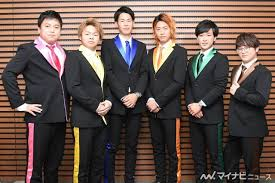
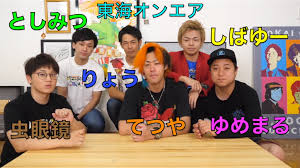

好きなYoutuberランキング
第1位
第2位
第3位

続いて第2位は東海オンエアというチャンネルです。日常のくだらないことを検証してみたり、過酷なチャレンジをしたりしています。 とても発想や想像力が豊かで企画力はYouTubeの中でもトップだと思います。

企画内容は多種多様でおすすめは「寝たら即帰宅の旅シリーズ」やメンバーで競い合う「～選手権」などです また、罰ゲームを受ける内容も衝撃で1ヶ月間ファラオの格好で生活したりしています